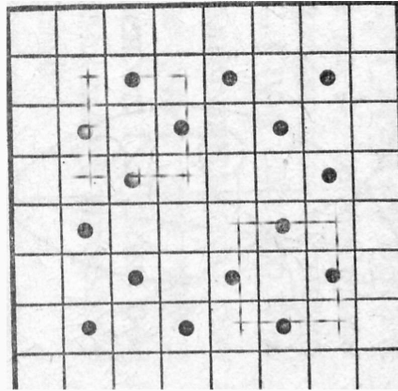

In draughts, the king attacks by jumping over another draughts-piece. What is the maximum number of draughts kings we can place on the black squares of a standard 8x8 draughts board, so that each king is attacking at least one other?
Consider a particular arrangement of kings that satisfies these conditions. A king standing on the edge squares of the board can never be attacked by another king, therefore all of the kings must lie in the 'inner' square of size 6x6. Notice that in any square of size 3x3 there can be no more than 4 kings. If such a square contains 5 kings then the centre square must definitively be a black one, and the kings must stand on all of the black squares in that 3x3 square. However in this situation the king standing in the centre cannot be attacked by any other king. Hence a 6x6 square can contain no more than $4 \times 4 = 16$ kings.
One such arrangement is shown in the drawing below.
16 kings.